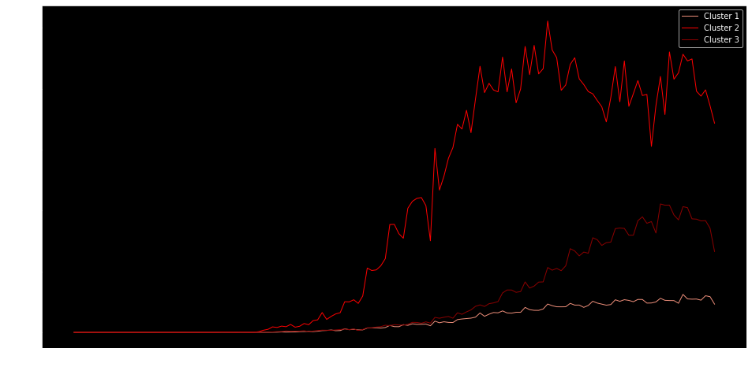
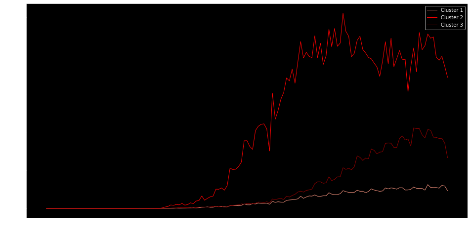

A la fecha, México ha sido afectado por la presencia del virus SARS-CoV-2. La pandemia ha expuesto problemas preexistentes y se deben tomar medidas para superarla, entre ellas está poner énfasis en la salud mental de la población. ¿Cómo ha afectado la pandemia la salud mental de la población que contrajo la enfermedad COVID-19? En este artículo analizaremos el estado actual del país respecto al virus y su impacto en los casos de ansiedad.
Mapa 1: Regiones Mexicanas clasificadas por casos diarios confirmados.

Número de casos totales hasta el momento: 460, 111
coronavirus.gob.mx
Número de casos recuperados: 288,076 de 21 Estados,
excluyendo a: Aguascalientes, Baja California, Baja
California Sur, Campeche, Coahuila de Zaragoza,Colima,
Chiapas, Chihuahua, Distrito Federal y Zacatecas
SINAVE (2020)
Número de casos totales hasta el momento: 460, 111
coronavirus.gob.mx
Número de casos recuperados: 288,076 de 21 Estados, excluyendo a: Aguascalientes, Baja California, Baja California Sur, Campeche, Coahuila de Zaragoza,Colima, Chiapas, Chihuahua, Distrito Federal y Zacatecas
SINAVE (2020)

Para realizar una aproximación de cómo es afectada la salud mental en la población, se tomará como muestra a tres estados de cada uno de los 3 clusters realizados a partir del Análisis de Componentes Principales. Estos estados son Estado de México, Guanajuato y Yucatán.
¿Por qué dividimos la República así?
Para unir las regiones del país por contagios y por recuperados, usamos dos técnicas, la de análisis de componentes principales (PCA) y el uso de Machine Learning para ver a qué grupo o “clúster” pertenece cada estado. Para ello, podemos utilizar el método de la curva del codo, que consiste en la suma de errores cuadrado en cada grupo para todos los datos que necesitemos, midiendo la distancia usando una métrica euclidiana; para esto, se busca en dónde se dibuja una curva o un "codo" y eso nos indica cuántos clusters debemos usar.
 
Curva Epidémica

Curva Epidémica
Se tomarán los criterios de recuperados de Coronavirus de los tres estados Edo. Mex, CDMX y Guanajuato haciendo la comparación con el tiempo en el que se dio el alta.
¿Qué es la curva epidémica?
Según la doctora Michele Torok, una curva epidémica es una representación gráfica del número de casos de acuerdo a la fecha de la aparición de la enfermedad. Torok (s.f.).
¿Cuál es la diferencia entre brote y epidemia?
Referente a los casos de una enfermedad, son muy similares, ya que un brote es una enfermedad que aparece donde no es común que aparezca, mientras que una epidemia es una enfermedad que ataca a un cierto número de personas en un tiempo determinado.
Curvas epidémicas por casos diarios a nivel nacional, Estado de México, CDMX y Guanajuato: